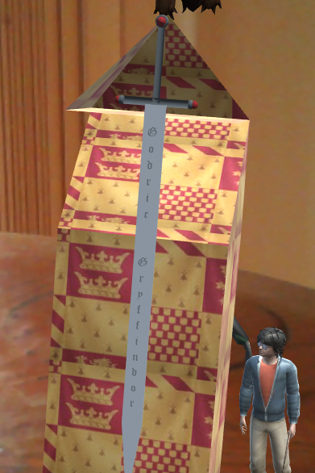
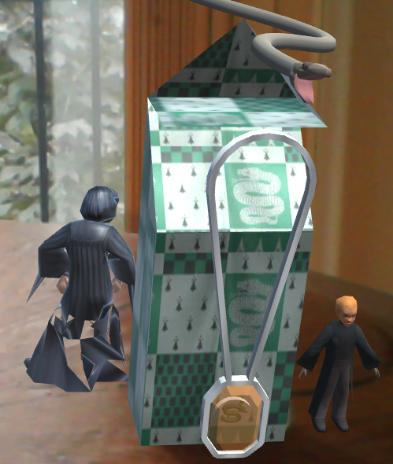
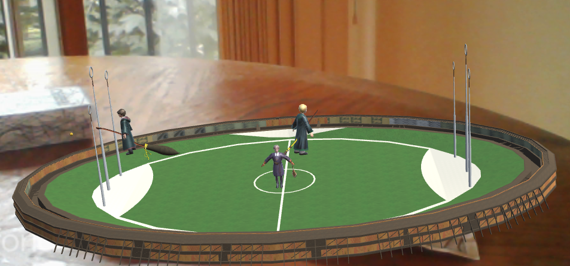
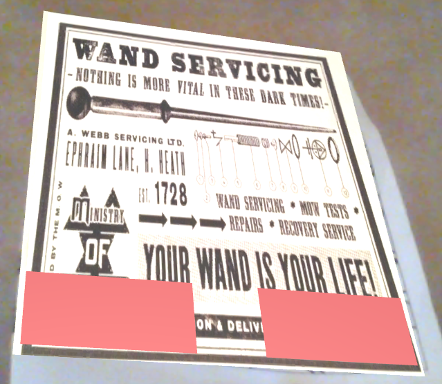
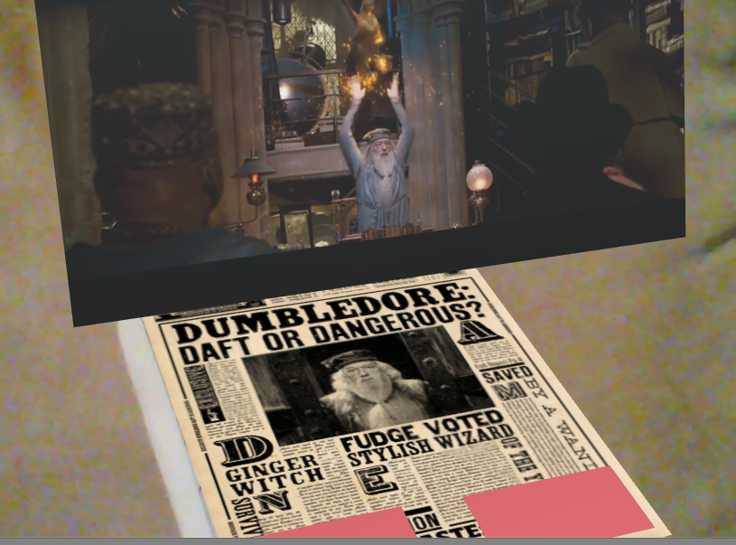
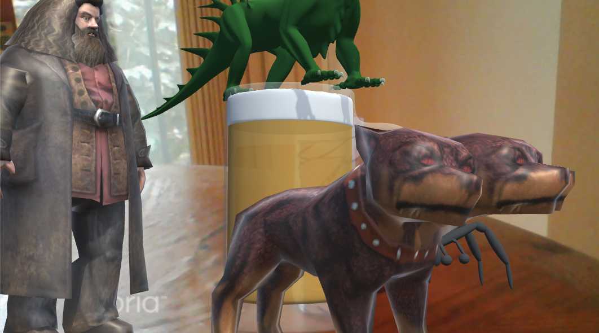

Me and my friend Vani spent 1 month working on augmented reality application to make breakfast more fun. After 1 month of hard work we were able to put together an application which worked quite well. As part of evaluation component Dr. Andrew asked us to review the applications made by others. Now, I am not really good at judging people as its tough for me to put myself into someone else's shoes. So, I wont be able to understand the kind of efforts the other people put into their project. So, as a review I will express how I felt whle using the application and try to give some constructive criticism.
Zaynab and Dona chose the theme of Harry Potter for their augmented reality application. Each cereal box represented one house with their colors, one character,one teacher and one creature as the representative. Each teacher is animated and each character has a sound. These scenes are wonderful to watch and as a childood harry potter fan, there was a feeling of joy to watch those characters come to life again. Following are the couple of snapshots for the same:
 The placemats depicted the dining hall and the Quidditch field. The animations and sound effects were spot on. I liked the sound of sorting hat shouting Gryffindor and the animations of Quidditch field were lovely. One could relive the spirit and intesity of the competition that was offered by the game of Quidditch. Following is its screenshot:
The magazines depicted daily prophet and wizarding world advertisments. There were few interesting innovations in the newspaper. First one included the 3d model of Voldermot. The second one included the video of Dumbledore escaping in style. Third page included the animation of a flying car which was the depiction of real event in a 3d model. All of these three depictions are one of the few ways in which our news media industry can evolve. It would be an interesting research study for the design students to find which of these ways would be the best medium for news
 The drink cans included Hagrid's hut with Buckbeak and cup of tea. The second drink can converts into butterbeer with hagrid at one side and his scary three headed dog, his tarantula and a dragon at the top. These scenes looked quite bland but were correct depictions from the movie. You cant otally imagine that hagrid would happily hangout with a dragon, tarantula and three headed dog. It will be quite a headache for him to control all those three magnificent beasts but he loves them all the same. Since the image was quite big I was unable to put everything in one snapshot. But you can see Hagrid,half of the dragon, the dog and legs of the tarantula.
To cut to the chase here is my critique. Following are its good points:
In the end,